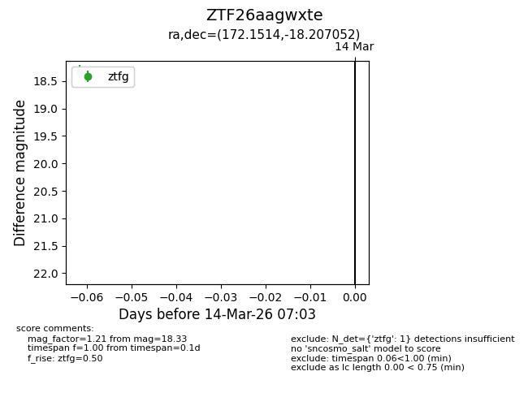
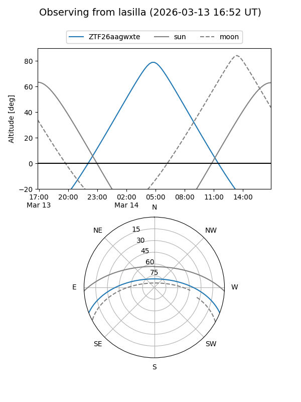
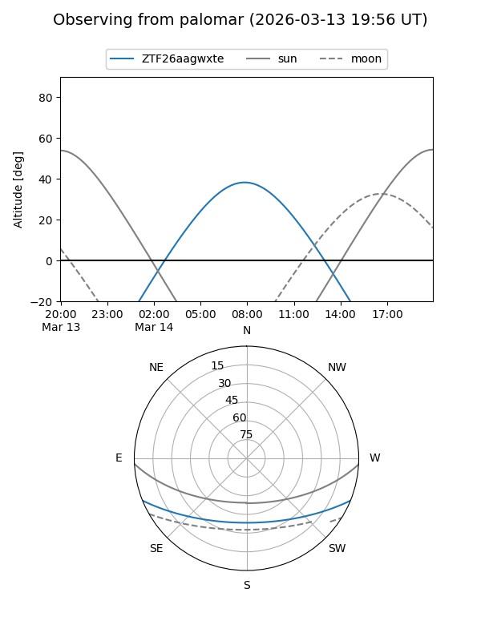

ZTF26aagwxte
Target ZTF26aagwxte at 2026-03-14 07:04
Aliases and brokers:
FINK: link
Lasair: link
ALeRCE: link
alt names
ZTF26aagwxte (ztf,fink_ztf)
Coordinates:
equatorial (ra, dec) = 172.1514,-18.20705
equatorial (HMS+DMS) = 11:28:36.34,-18:12:25.39
galactic (l, b) = (276.7520,+40.41634)
Flags:
Photometry:
last ztfg=18.33
1 ztfg detections
Lightcurve

Visibility


Additional plots